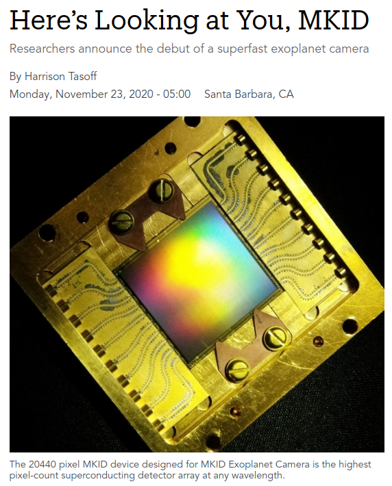

|  |
The MKID Exoplanet Camera (MEC) installed on SCExAO is up and running ! See UCSB press release |
|---|
| |
Neptune imaged by SCExAO's near-IR viewing science path camera (C-RED 2 camera, 0.95 to 1.7 micron sensitivity). The short image sequence shows the planet rotation. Image processing by Julien Lozi. |
|---|